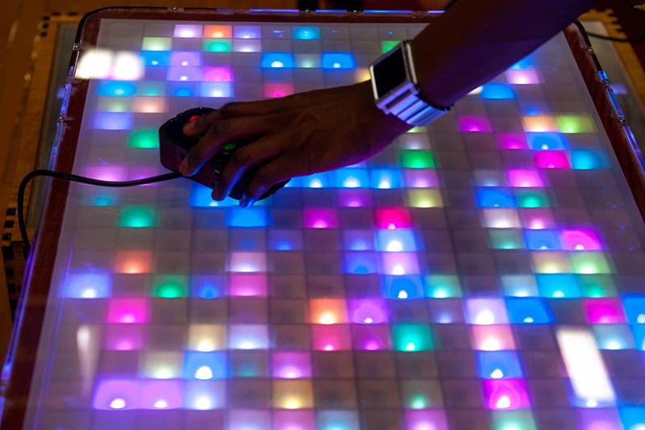

Have you ever looked at a piece of furniture and thought how much better it'd be with a LEDs or if it were automated? Take
an ordinary table for example. Use it as a tracing table? Check! Play games like Snake and Tetris? Check! Show off
to friends? Definitely check! Now imagine automation. An elegant coffee table that raises to become a stylish desk?
Check! David Afolabi's 2014 xFair project was this stylish and futuristic table that can lighten up the mood with LEDs
and raise and lower itself to match the user's height.
The table is made of lasercut wood and uses linear actuators attached to the legs to change height. The 15x24 LED
matrix made of Adafruit Neopixels is embedded under the polycarbonate table surface. The matrix is controlled by Arduino
and can be programmed to display any pattern within its resolution. The Arduino is able to convert any image or video
to format suitable for display on on the table, so any game that can fit in its 360-pixel resolution can be played
right on the table through two custom-built controllers that interface with the Arduino controller.
David brought a previous version of this table to the 2.007 Engineering Petting Zoo. With the support of ProjX, David
received $500 to develop this second iteration of his project with greater LED count and vertical height adjustment.
This project was displayed at xFair 2015!

Projx
Student funding for student projects